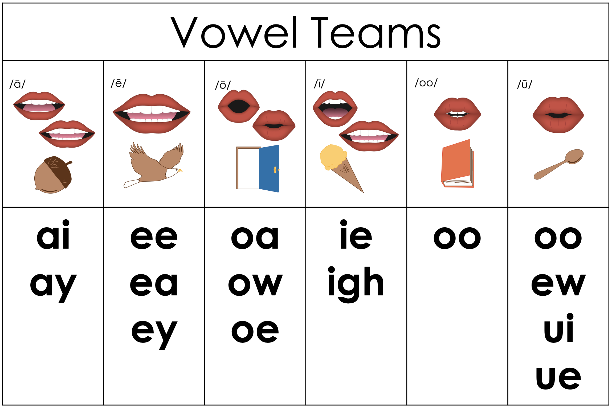
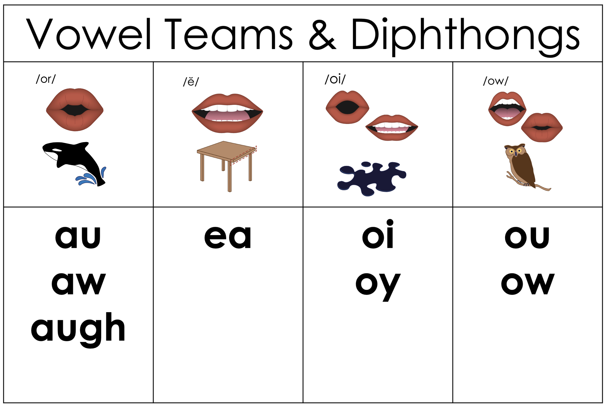

Lesson 97
Vowel Teams &
Diphthongs Review

ufliteracy.org


Lesson 97
Vowel Teams &
Diphthongs Review


See UFLI Foundations lesson plan Step 1 for phonemic awareness activity.


See UFLI Foundations lesson plan Step 2 for student phoneme responses.


ou
ow
oi
oy
ea
a
aw
au
augh
ew
ui
ue
oo
u
igh
oa
ow
oe
ee
ai
ay


See UFLI Foundations lesson plan Step 3 for auditory drill activity.

No slides needed for auditory drill.


See UFLI Foundations lesson plan Step 4 for blending drill word chain and grid.
Visit ufliteracy.org to access the Blending Board app.


See UFLI Foundations lesson plan Step 5 for recommended teacher language and activities to introduce the new concept.
Vowel Teams
Diphthongs


toi
let
**display in slideshow mode for animations
let
toi
let
toi
let
**display in slideshow mode for animations
Au
gust
**display in slideshow mode for animations
gust
Au
gust
Au
gust
**display in slideshow mode for animations
out
side
**display in slideshow mode for animations
side
out
side
out
side
**display in slideshow mode for animations
farm
house
**display in slideshow mode for animations
farm
house
house
farm
house
**display in slideshow mode for animations

Handwriting paper for letter formation practice. Use as needed.
See UFLI Foundations manual for more information about letter formation.

toilet
August
household
downhill

August
noisy
daughter
breakfast
ready
weather
pointed
around
enjoyed
outside

See UFLI Foundations lesson plan Step 5 for words to spell.
Handwriting paper to model spelling.

See UFLI Foundations lesson plan Step 5 for words to spell.
Handwriting paper for guided spelling practice.


Insert brief reinforcement activity and/or transition to next part of reading block.

Lesson 97
Vowel Teams &
Diphthongs Review

New Concept Review

See UFLI Foundations lesson plan Step 5 for recommended teacher language and activities to review the new concept.
Vowel Teams
Diphthongs
farm
house
**display in slideshow mode for animations
farm
house
house
farm
house
**display in slideshow mode for animations
bedroom
drawing
outside


See UFLI Foundations lesson plan Step 6 for word work activity.
Visit ufliteracy.org to access the Word Work Mat apps.


See UFLI Foundations lesson plan Step 7 for irregular word activities.
The white rectangle under each word may be used in editing mode. Cover the heart and square icons then reveal them one at a time during instruction.

See UFLI Foundations manual for more information about reviewing irregular words.

February
Lesson 95+
AR represents the /air/ sound.
In some dialects, the R is silent, and U may be pronounced /yū/ or /ŭ/
The white rectangle under the word may be used in editing mode. Cover the heart and square icons then reveal them one at a time during instruction.
eye
Lesson 96+
EYE represents the /ī/ sound.
The white rectangle under the word may be used in editing mode. Cover the heart and square icons then reveal them one at a time during instruction.
heart
Lesson 96+
EAR represents the /ar/ sound.
The white rectangle under the word may be used in editing mode. Cover the heart and square icons then reveal them one at a time during instruction.
our
Lesson 96+
R represents the /ə/
The white rectangle under the word may be used in editing mode. Cover the heart and square icons then reveal them one at a time during instruction.
Handwriting paper for irregular word spelling practice. Use as needed.
See UFLI Foundations manual for more information about reviewing irregular words.


See UFLI Foundations lesson plan Step 8 for connected text activities.
I keep my bedroom nice and clean.
My drawing of the heart is almost ready!
Roy will raid the fridge for something good to eat.
See UFLI Foundations lesson plan Step 8 for sentences to write.

The UFLI Foundations decodable text is provided here. See UFLI Foundations decodable text guide for additional text options.
A New Coin
While walking home from work, Carson saw a coin laying on the ground. “This is my lucky day! I found a coin,” said Carson. But as Carson inspected the coin, he began to notice that he had
never seen a coin quite like this before.
This coin had a hole in the middle of it, and Carson did not recognise the markings on it.
Carson wanted to find out where this coin came from. When he got home, he went online to see what he could find out. He looked for any coins with holes in the middle.
He found that there are several kinds of these coins around the world. Japan, Norway, and Spain all have coins with holes in the middle. However, as Carson looked at the coins on his computer screen in more detail, he found one that was an exact match.
He ran into the family room and shouted to his father and sister, “My newfound coin is from Japan! Japanese coins are
called yen. Who could have lost it?” Carson’s father considered for a minute, and then said, “I remember the mailman telling me he had taken a trip to Japan last month. It could be his. I will ask him on Wednesday!”

Insert brief reinforcement activity and/or transition to next part of reading block.